Created: 30.03.2015
Updated: 03.04.2016
By: dmb TEAM
Thank you for purchasing our iOS application. If you have any questions that are beyond the scope of this help file, please feel free to email us via our Profile Page here. Please always contact us via that contact form. Thanks!
In order to successfully open and customize the product you need xCode 7.2:
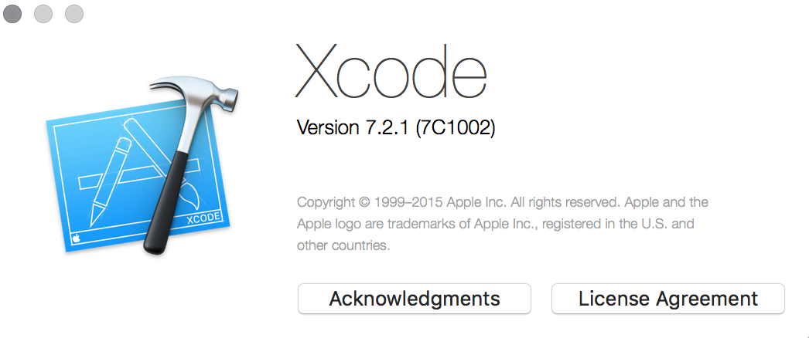
When you are ready with the installation of xCode 7.2, just extract the content of the .zip file that you get from CodeCanyon (e.g. dmbteam_ios_joke_app_v1.1.zip) and double click on the Recipe.xcodeproj file. This way you will open the product with xCode.
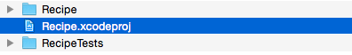
When xCode is opened here is the screen which you will get:
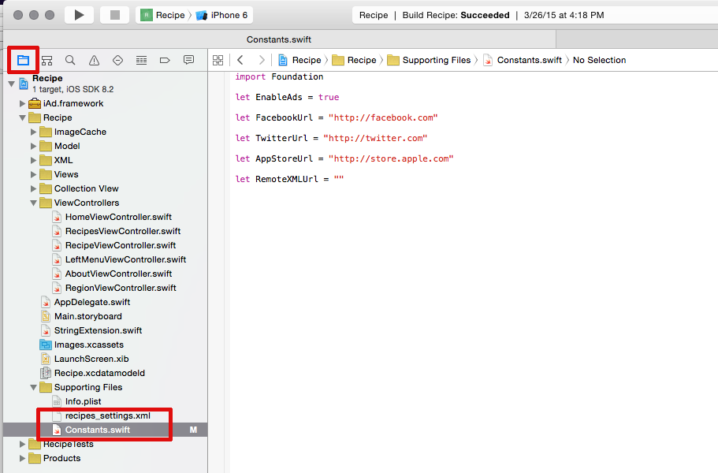
If you can't see the Project's Structure on the left, make sure that you have clicked the folder icon, which will switch to the correct perspective (see the fitst red rectangular on the image above). Basically there two important files, that you will dealing with:
First of all you should decide whether you will use a local .xml file (within Supporting Files folder) for your recipes or you want to use external .xml file (web hosted on a web server).
By default the app uses local .xml file and you just need to add your recipes to recipes_settings.xml file within the Supporting Files directory.
1.1. External .xml file (Web Hosted): If you want to use web hosted .xml file (uploaded on a web server), you have to set up the project to do so. For that purpose open (double click) the Constants.swift file and look for the RemoteXMLUrl constant. You should add, as vallue, the path (web url) to your .xml file, like in the example below:
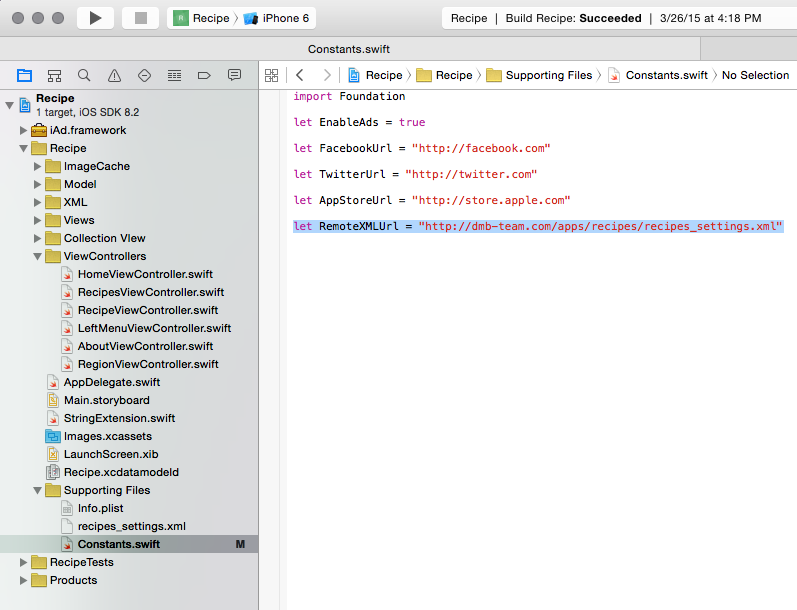
As you can see now it is set to use our test .xml file. So you have to replace the URL http://dmb-team.com/apps/recipe/recipes_settings.xml with yours.
1.2. Local .xml file (within Supporting Files folder): If you want to use a local .xml file you should leave the RemoteXMLUrl constant empty (with no value), like this:
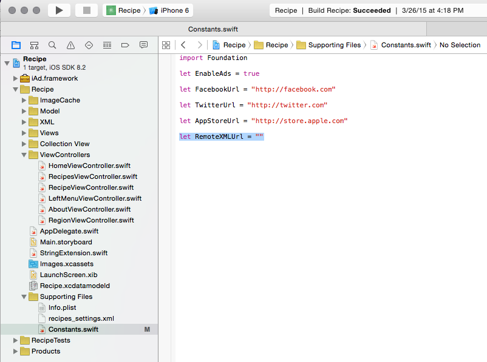
1.3. How to Edit the .XML file (applies for both local and external):
If you are using the local .xml file you can edit it directly within xCode. If you want to use external .xml file, just copy the local one and paste it on your desktop. After that open it via text editor program (Notepad++ or similar) and apply the needed changes. When you are ready you should upload that .xml file to your web server. Please note that you should point the path to the xml file within the constant described above.
To add Recipes, do the following:
Please note that you can have either an image or a video integrated into a step - you can't have both of them.
You can always use our test .xml file as template. It contains 7 categories: Main Courses, Appetizers, Soups, Vegetarion, Deserts, Time-Savers and Other. Plus, we have added a lot of comments within the .xml file to be easier for you to edit it.
To customize the Splash Screen do the following:
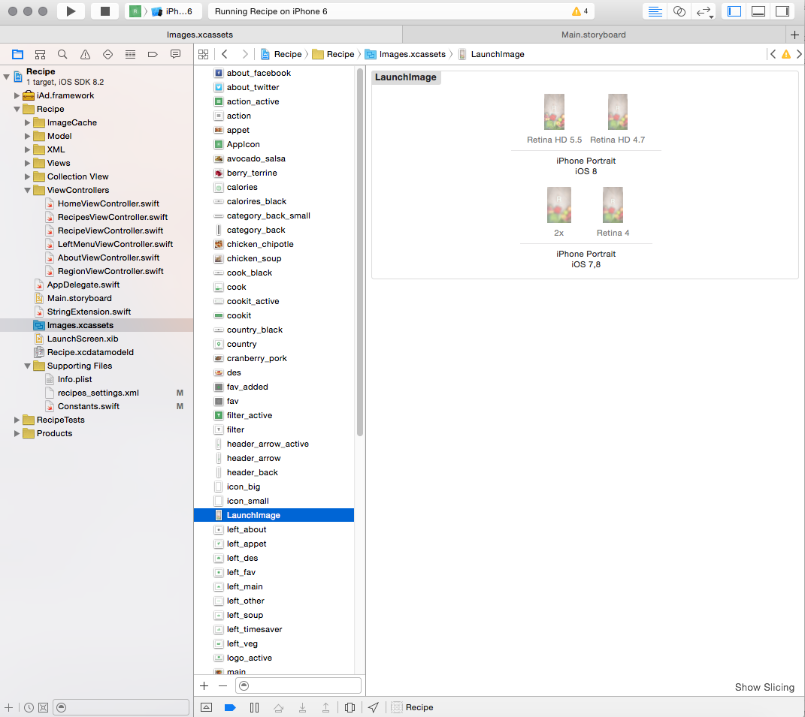
Finder view: As you can see you have 4 different images for the different iPhone's resolutions.
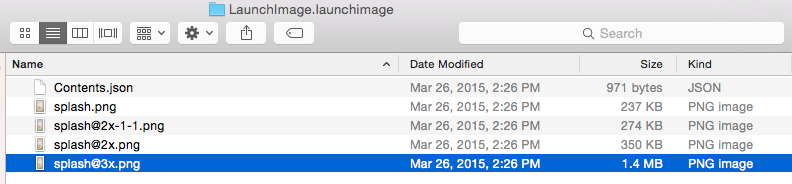
The product has integration with AdMob and by default the ads are enabled. You can control the showing of the ads from the
let EnableAds constant, within AppConstants.swift file.
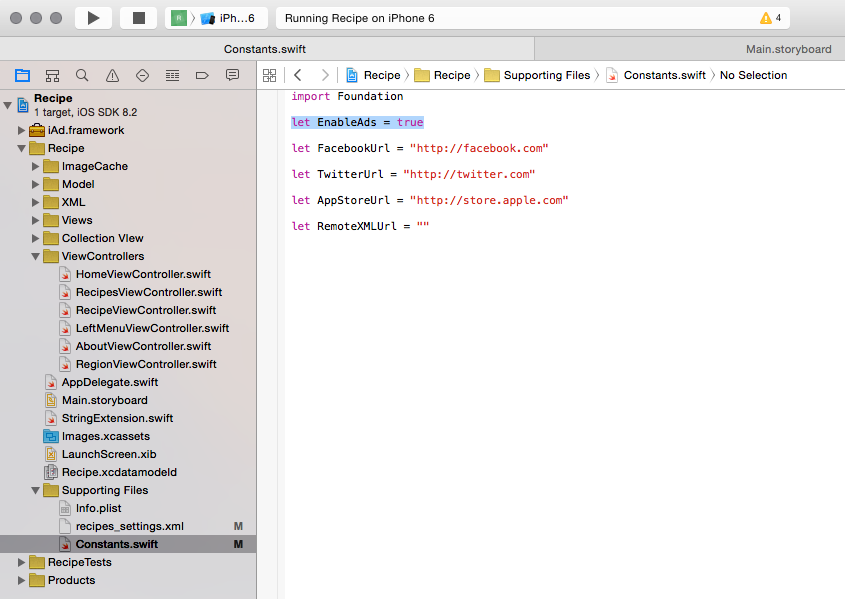
In addition, there are two main steps in order to use Ads in the app. The first one is to register an account HERE. Then, you have to copy your AdMob ID to AppConstants.swift file located within the Supporting Files directory:
The product has simple About page, which is accessible from the Left Menu:
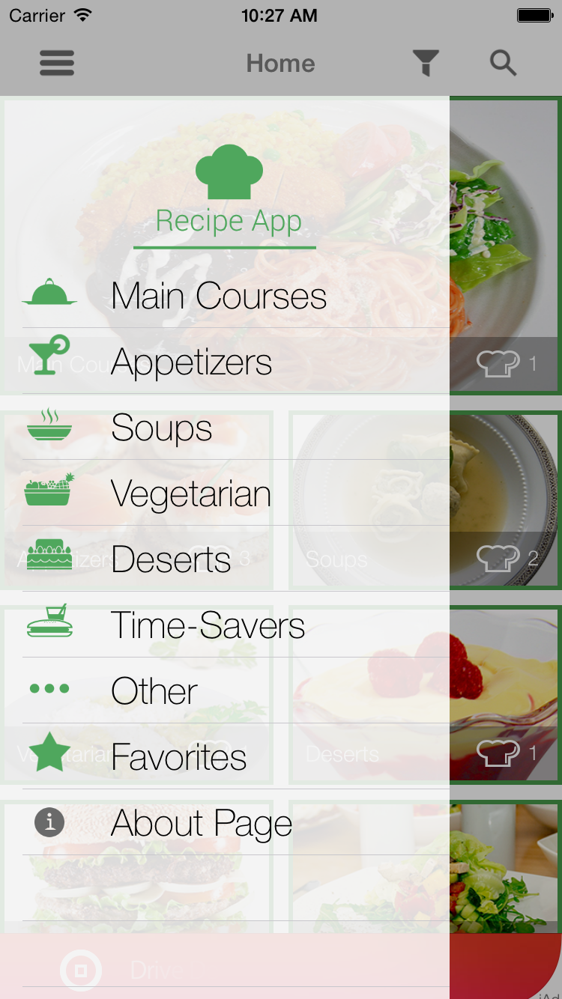 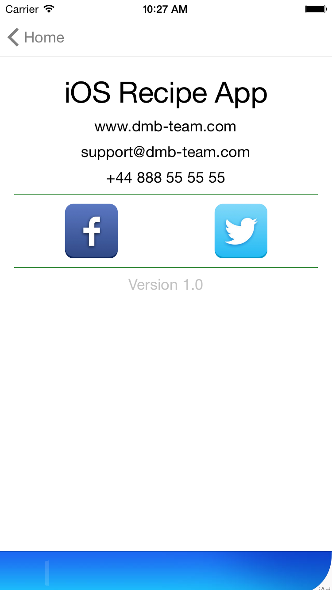
a) To setup the content of the About Page, open the Main.storyboard file and click on the About View Controller Scene. Inside it, expand the About View Controller, then the View item and you will see all of the elements:
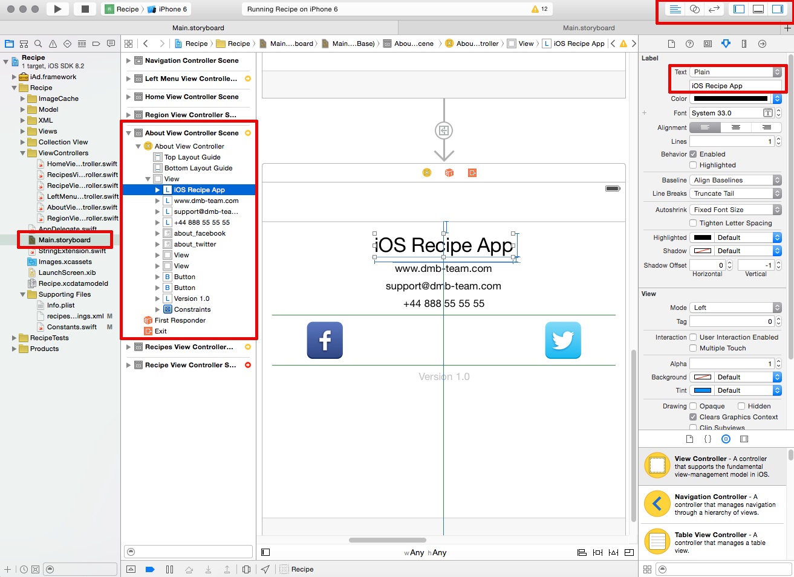
First 4 items are TextViews and you have to change the value from the right panel.
Then you have two ImageView items: one for Facebook and one for Twitter. When you click on each of them, from the right panel you can change the image if you don't like the default ones.
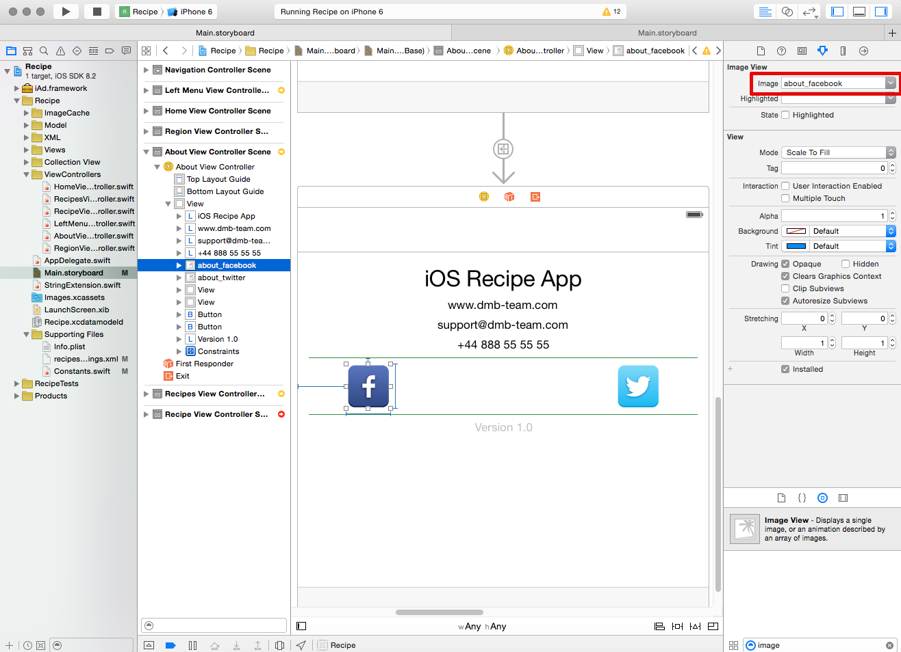
And last but not least, to finish the customization of the About page, open Constants.swift file and change the default links of the Facebook and Twitter:
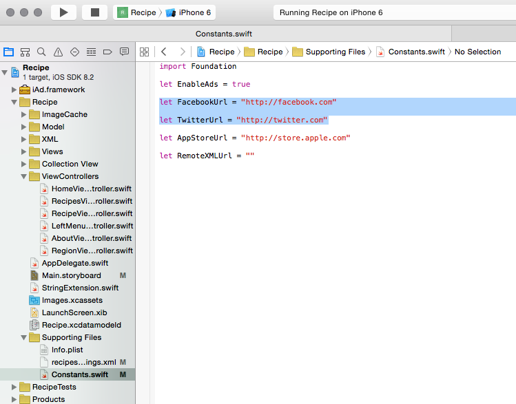
From the left panel of xCode click on Images.xcassets, then find the AppIcon item and replace the four images that you see on the right. Please make sure to replace the images with the exact same size. To see the size of each image just right click on each of them and select Show in Finder. There you will see the different sizes that you should provide. It's good idea to preserve the image file names too.
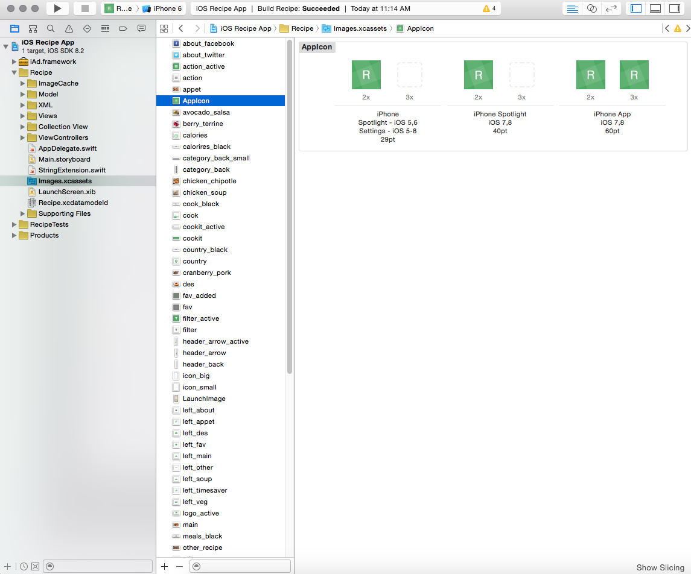
iOS Recipe App is integrated with OneSignal service when it comes to Push Notifications. This way, you will be able to send over targeted notifications to your users tha have installed the app. The process is not that simple, that's why we've prepared a video tutorial - we believe this is the best way to get it right and quick.
Open in Youtube OneSignal Documentation
You can always check the product's Support Tab section (at CodeCanyon.net), where you can find a lot of already answered questions and solved issues. Plus, you can benefit from the Comments section (at CodeCanyon.net), where we've replied to a lot of questions.
"iOS Recipe App" by dmb TEAM